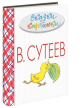

Праздничное издание к 111-летию художника и писателя В.Г.Сутеева. Владимир Григорьевич Сутеев знаком нам как автор и иллюстратор книжек для детей, однако знаменит он не только этим. В.Сутеев стоял у истоков советской и ныне - российской - мультипликации, он работал и сценаристом (написал около 40 (!) сценариев, которые почти все были экранизированы), и режиссёром, и, конечно, художником! Все сказки, вошедшие в эту книгу, тоже стали мультфильмами - многие из них Вы наверняка вспомните! А те, которые почему-то забылись, обязательно сами всплывут в памяти, лишь только вы взглянете на яркие, добрые, остроумные и такие живые и настоящие, "сутеевские", картинки. Для детей дошкольного возраста. Для родителей, воспитателей и руководителей детского чтения дома и в детском саду. В книгу вошли знаменитые сказки и картинки В.Сутеева,...